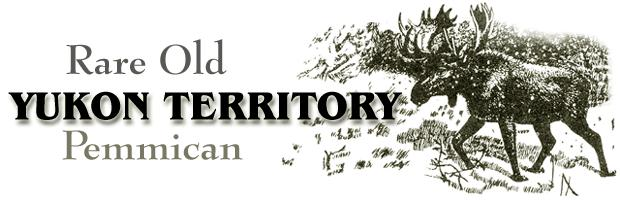

Once in a while you hit it lucky and meet someone like Yukon Pete.
Pete was born in Dawson half a century plus ten or fifteen years ago, and grew up on a wilderness farm where the family had a milk cow, raised their own pork, planted a big garden, and lived off the land. And, of course, they made good use of the north country's plentiful wild game . . . fresh, canned, smoked, and preserved as pemmican.
It's been fifty years since Pete ate his mother's pemmican, but he remembers it as if it were yesterday . . . and here's the recipe.
One-third lean bear meat
One-third lean moose meat
One-third lean pork scraps
Salt, pepper, sage
Berries
Bear grease
To paraphrase another celebrated recipe, "First catch your bear." Lucky hunters might substitute other wild meats-venison or elk, maybe-for those listed above, to add the true pemmican flavor that only game can give. Us tenderfeet, though, may have to imitate the mountain men of the old West, accept the fact that "meat's meat", and use what we can get. Now about beef, pork, and mutton? (Pete's recipe is somewhat unusual in that it calls for fresh meat. More often, pemmican was made from jerky.-MOTHER.)
Whatever makings you decide on, grind them with the medium blade of your, food chopper, mix 'em well, and season with salt and pepper (and, occasionally, sage for a change of pace). Then cook the whole shebang together with very little water-just enough to steam rather than boil the pan's contents-until the meats are done. Toward the end of the process, remove the lid from the kettle to let the moisture evaporate while retaining the rich juices.
How much fruit you'll want to add to your pemmican is a matter of taste. Personally, I'd keep the amount down to not more than a quarter of the mixture . . . but suit yourself.
The kind of fruit you add is also up to you. Pete's mother made pemmican in late fall, when the hogs were slaughtered, and spiced her mix with the cranberries she'd put up in jars earlier. If you, too, choose canned berries, stir them in when the meat is almost done.
Fresh fruit is also suitable for pemmican-making. I like the idea of using serviceberries and chokecherries, as the Indians did here in Idaho (but chokecherries, let me tell you, are a curse to pit). Any such freshly picked ingredients must be added earlier than canned berries to allow thorough cooking.
For the next step you'll need a white cloth bag about the diameter of a saucer. I sew mine from worn sheeting, because new material doesn't allow surplus grease to seep out. And I make a point of boiling the sack just before use (I like to know that the fabric is sterile, and wet cloth packs more easily in any case).
Fill the sack with the steaming mixture of meat and berries, and have grease hot and ready to pour over the contents. My Yukon friend tells me that his mother used a big dipper to ladle out melted bear fat . . . about a quart for 20 pounds of meat. No real substitute exists, he claims, but adds that-since "there ain't no bear grease"-I'd better stick to good pure lard and "stay away from all that vegetable oil and shortening".
If you take Pete's advice, remember that lard will foam when heated and should be melted in a large container. Pour it into the sack at once, so that the hot fat will seep down and mingle with the hot meat mixture. (This is one reason why all cuts used must be lean.)
Another purpose of the added lard is to coat the sack and make a tight casing which preserves the contents very effectively. "Keep pemmican cold and it's good for ten years," says Yukon Pete. I store small batches in the refrigerator for short-term use, and wrap and freeze the rest.
Using pemmican is an art in itself. The old northerner said that when he was a kid he used to cut a couple of thick slices, wrap them in newspaper, and stick the package in his pocket. Then he'd snowshoe or drive his dog team to school. At lunchtime, out came the pemmican-still frozen-and he'd lay the slices on top of the old wood heater to fry. "It's a rich food and really sticks with you," he told me.
Pete could have eaten his pemmican cold-the ingredients, remember, are precooked-and you've no doubt heard stories about old-timers wolfing down the food straight from the bag. Nevertheless, the mixture is too greasy to be at its best in that form. You'll like it much better heated . . . preferably by light frying.
Pemmican is a fine breakfast meat when served with hash browns and eggs, sourdough hotcakes, or buttermilk biscuits as its sidekicks. Or you might take a hint from Pete and make a real Yukon feast by simmering a hefty chunk of the preserved meat with carrots, potatoes, and onions (as you'd cook a New England boiled dinner). It'll stick to your ribs . . . and boy, is it good!
|
 |
|
|